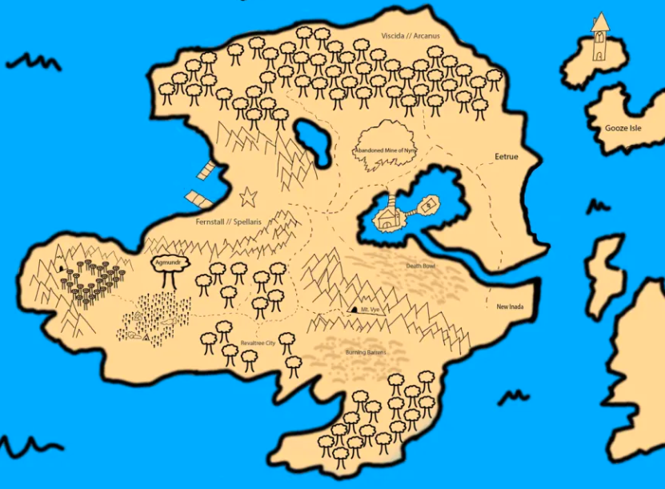

Map of Nymoona
Explore the island and its important locations.

Locations
- Fernstall — Capital of Nymoona, ruled by the Spellaris royalty
- Viscida — Ancient Druidic city, ruled by Arcanus royalty
- Eetrue — Subterrainian goblin capital, ruled by The Red Hand Goblins
- New Inada — East coast pirate town, ruled by Beaker and his pirate crew
- Agmundr — Great world tree of Livasa, ruled by the Fairies of the Summer Court
- Revaltree — Southern lumberjack township, filled with monk and dwarvish influence
- Rubble — Hidden city found in the old mines of Nym
- Mt. Vye — Rural mountain region filled with giants and dungeons
- Burning Barrens — Southern Desert, home to the city of Oasis
- Oasis — City of thieves, run by many bands of adventurers from different walks of life
- Death Bowl — Northern Desert, home to ancient ruins of past draconic civilizations
- The Gooze Isles — Secluded religious land filled with feral ooze and followers of Nemross